要讀萬卷書
不然讀ONE JUST輸！
專案背景
專案動機
透過我們的調查，Study with me的讀書形式有兩大痛點，第一點為不願在網路上袒露真實面貌，第二點則為錄製影片、上傳平台手續太過繁瑣；而讀書專注APP則是不能判斷使用者是否有真的專注，以及更多的是以使用者自己點開軟體使用為主，少了同儕社交的渠道，還需要利用其他社群平台進行聯絡。因此，我們發想了虛擬人像視訊自習室以及能夠與書友互動的功能，讓「讀one just書」這款讀書專注APP擁有不露臉但互動性佳的study with me讀書形式，並透過開啟鏡頭判斷是否有持續專注，減少了使用者掛機可能性。
隨著科技的飛速發展，網路深深融入了我們的生活，疫情的爆發更是促使線上學習成為了熱門話題，「Study with Me」這種社交化的讀書方式在高中生和大學生中快速流行，透過網路社交平台，用戶可以觀看他人在視訊直播或錄製影片中的讀書過程，以此激勵自己保持專注，而市面上也越來越多讀書專注打卡APP，然而，有一些人對於這類型的APP持有疑慮，他們認為光是藉由按下「開始專注」的按鈕，並無法確定其他使用者是否真的在讀書，因此我們打算將讀書專注APP結合Study with me，改善兩者的痛點，創造出我們本次的專案──讀one just書。

 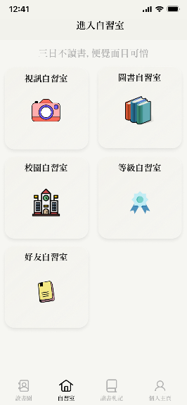
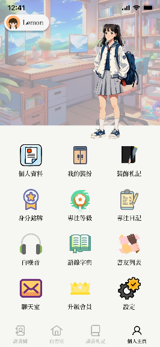
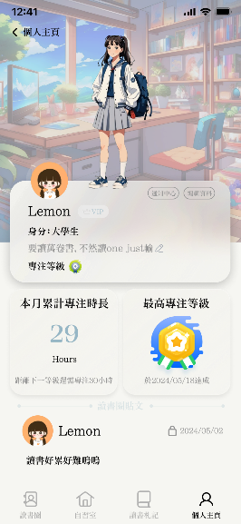
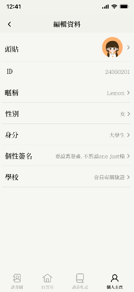
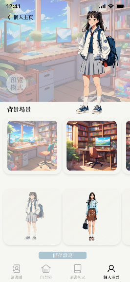
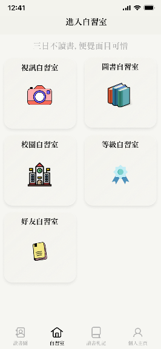
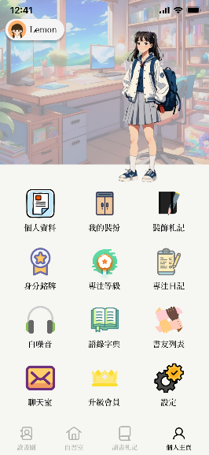
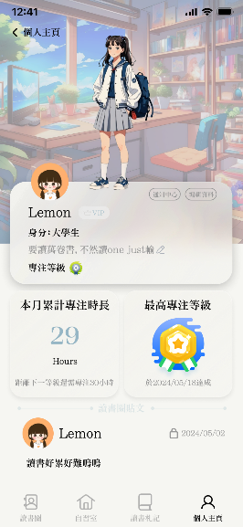
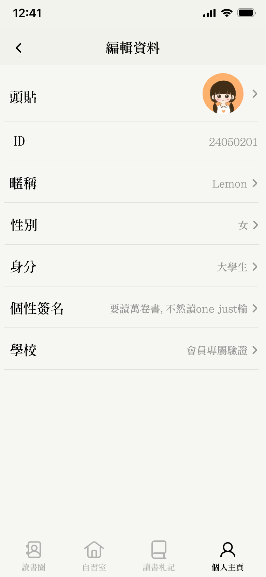
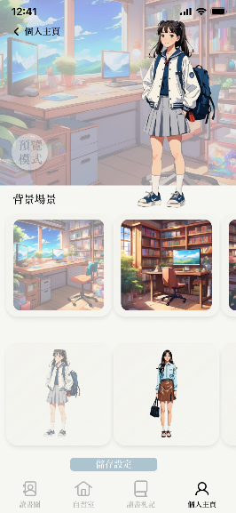
 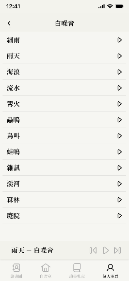
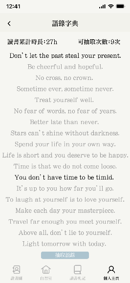
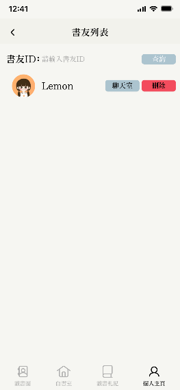
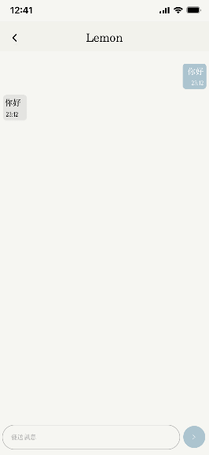
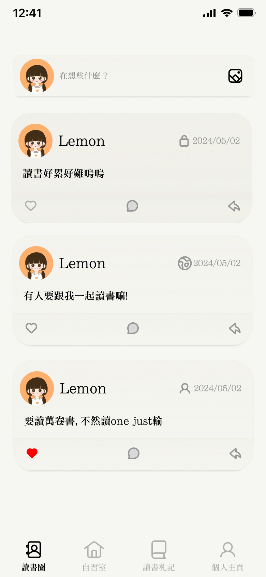
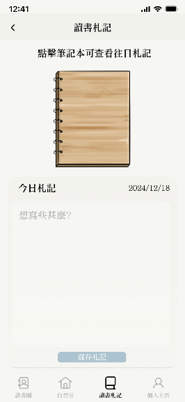
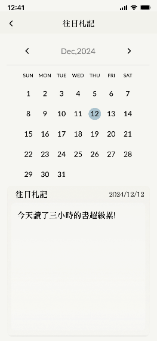
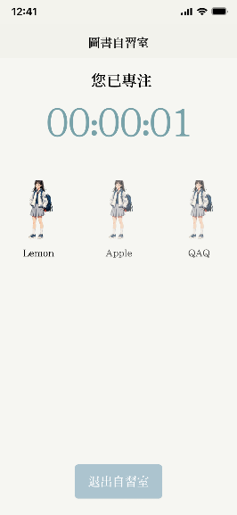
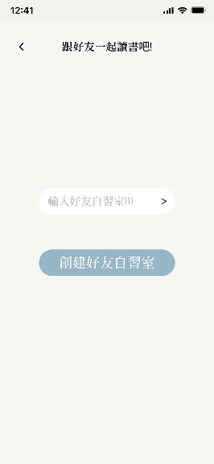
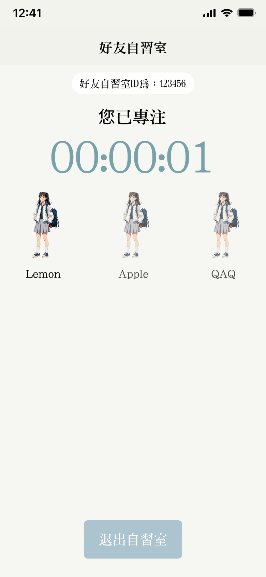
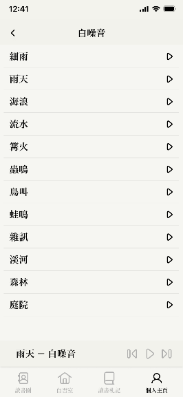
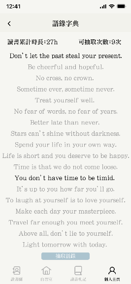
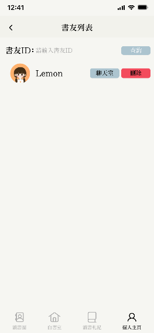
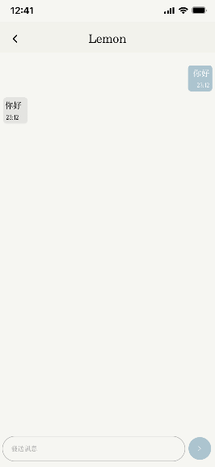
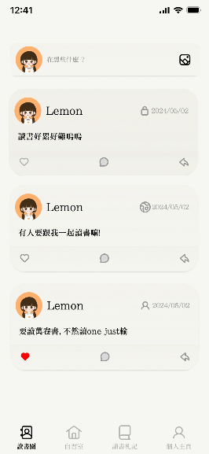
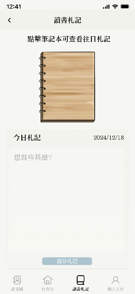
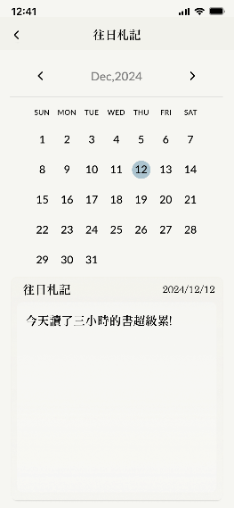
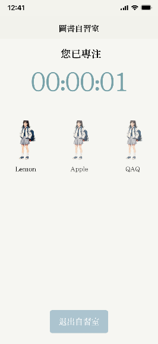
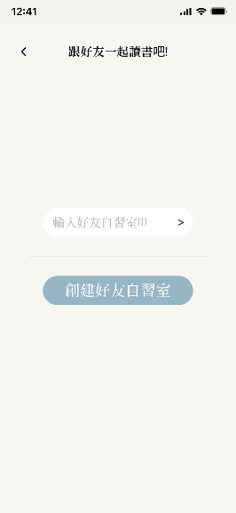
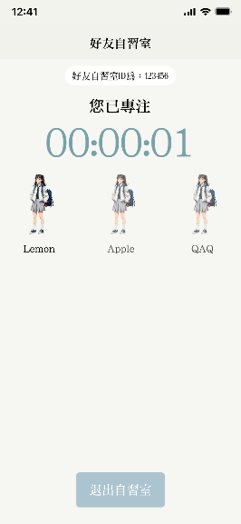
專案特色
透過會員身分專屬的學校認證功能，每位會員都有專屬的身分銘牌，並且自動劃分至屬於自己學校的自習室，與校友共同學習、交流，為同校學生提供一個獨特的學習社群空間。
在功能特色方面，每位用戶都可以挑選在軟體中代表自己的虛擬形象，且系統將依據用戶當前等級解鎖不同的造型選擇，使用者可於升等後挑選自己喜愛的人像圖片，讓個性化的人物風格為使用者增添一份趣味。
為了維持用戶的讀書習慣，本系統也擬定了升級制度，依據累積的讀書時數作為升級標準，隨著使用者累積的讀書時數增加，便可以不斷提升自己的等級。
使用者可於完成系統設定之讀書時數後抽選一條加油語錄，並收納於語錄字典中，這些已抽取的語錄可供使用者於書友便利貼中作加油打氣之用。